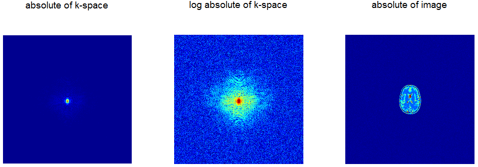
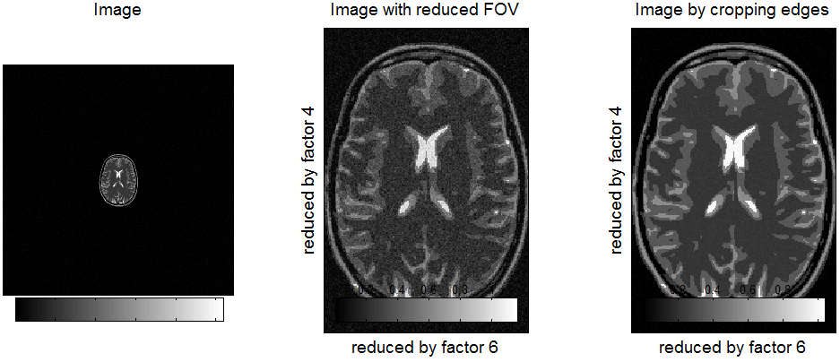
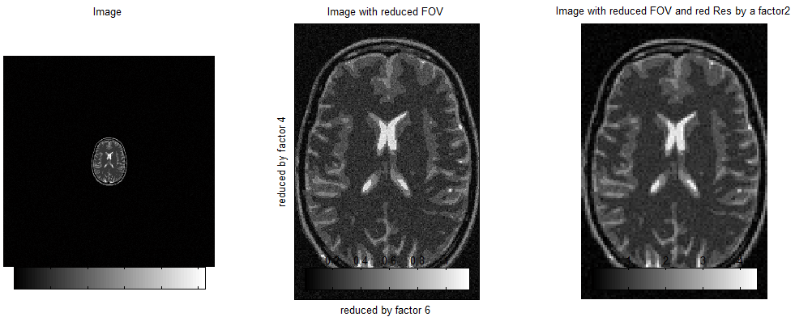
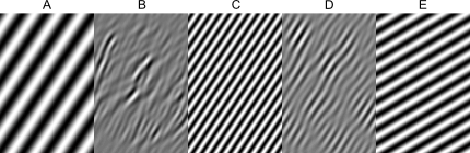
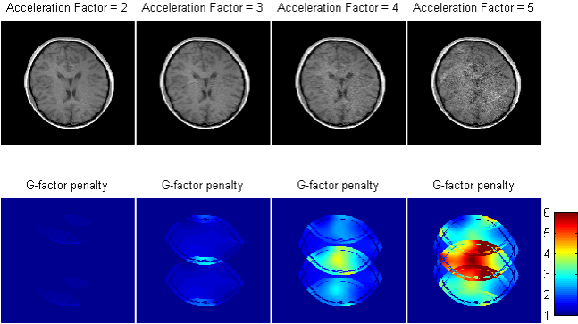
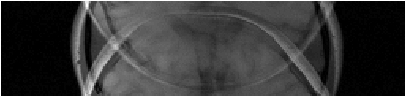
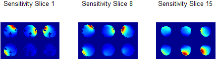
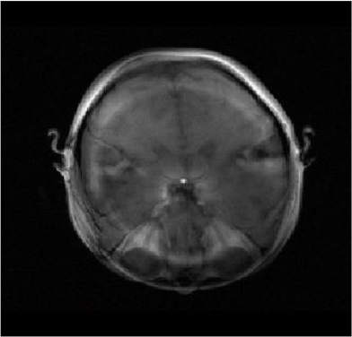
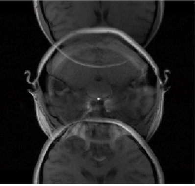
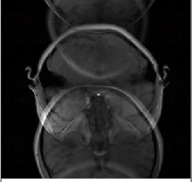

MR Toolkit - Recon and Parallel Imaging
Table of Contents
Questions to be answered in groups of three with the use of any material you might want to use. You have 30 mins to submit the answers, as a team you have to agree on the response given.
Image Reconstruction Tutorial
1. Looking at the data

In the rightmost image above, how is the brain oriented?
- A. The image shows a transverse/axial slice of a brain.
- B. The image shows a coronal slice of a brain.
- C. The image shows a sagittal slice of a brain.
2. 1 Undestanding FOV, resolution and k-space
"The uniform spacing between data points in k-space, \(\delta k\), is \(\frac{1}{L}\), where \(L\) is the spatial interval over which the image repeats itself in image space. The interval \(L\) is called the Field-Of-View (FOV)." - From MRI Principles, Haacke.

Look at the Image with reduced FOV and the Image by cropping edges. Can you explain why the Image with reduced FOV looks noisier? Think about it for a minute before answering the question below.
The reduction of the FOV can be done…
- A. By subsampling the k-space. In the example image, a combined reduction factor of 24 is possible.
- B. By sampling a central region of k-space. A total factor of 4 could be reduced without sacrificing on the resolution.
- C. Either in k-space or directly in the image space by simply cropping the image. The results are equivalent. In the example image a reduction factor of 24 could be achieved.
2. 2 Understanding FOV, resolution, k-space and SNR
To increase the SNR available in the dataset with reduced FOV, it is better to have a lower resolution than currently prescribed. The original resolution was 0.85mm. Let us make it 1.7mm on both x and y.

How does the new low resolution image look like?
- A. The image looks just as noisy as before.
- B. The image is less noisy than before but some details are now unclear.
- C. Because the image already had a tight FOV it wasn't possible to increase the SNR.
3. How does SNR work?
Formulate the dependence of SNR as a function of: Number of phase encoding steps,\( N_{PE}\) and voxel volume, \(V\);
- A. \(\text{SNR}_{} = {Signal(TR,TE,\alpha) \bullet V \bullet N}_{\text{PE}}\)
- B. \(\text{SNR}_{} = Signal(TR,TE,\alpha) \bullet \sqrt{V \bullet N_{\text{PE}}}\)
- C. \(\text{SNR}_{} = Signal(TR,TE,\alpha) \bullet V\sqrt{N_{\text{PE}}}\)
4. Exploring k-space
How is information distributed in k-space? Consider the k-space representation of the image of reduced FOV and resolution of the previous exercise. What information do you think was present on the k-space coordinate (kx=ky=10)?

- A
- B
- C
- D
- E
Parallel Imaging Tutorial
5. Acceleration factors and SNR
Parallel imaging can be used to accelerate the acquisition of single slice. In the case of structural imaging it shortens the acquisition time. In case of echo planar imaging, EPI, it is used to reduce the echo train length and distortions. The images will suffer an SNR penalty because of the reduced number of phase encoding steps measured (see the answer to question 3), and also a so-called G-factor penalty because of noise amplification associated with disentangling overlapping pixels. The SNR of an accelerated acquisition with an acceleration factor of AF can thus be written as:
\(\text{SN}R_{\text{af}} = \frac{\text{SNR}}{\sqrt{\text{af}} \times g_{\text{factor}}}\)
Look at the following examples:

Which acceleration factor was used to acquire the image below?

- A. Acceleration factor 2.
- B. Acceleration factor 3.
- C. Acceleration factor 4.
- D. Acceleration factor 5.
6. Simultaneous multislice (SMS)
Consider the case where three slices were simultaneously excited. The acquisition was done with six receiver coils for which the following sensitivity maps had been acquired:

When encoding the acquisition, three different CAIPI factors were applied:
| 1 - no FOV shift; | 2 - 0.5xFOV shift; | 3 - 0.33xFOV shift |
|---|---|---|
|  |  |  |
Which of the data sets would be better reconstructed using standard parallel imaging?
- A. The three data sets can be equally well reconstructed because the same information is present in all of them.
- B. Because the six coil sensitivities used don't have much variations across the slice direction, the reconstruction will fail independent of shifts.
- C. The reconstruction for the no FOV shift will fail, and the remaining ones will be better.
7. Mixing in-plane acceleration and SMS
The in-plane acceleration (along the phase encoding direction) achievable without significant g-factor penalty is independent of the usage of simultaneous multi-slice excitation.
- A. True
- B. False
Supplementary Information
The following information only concerns those attending the Toolkit.
After the first attempt you can find some MATLAB scripts to help you interact with this tutorial. They can be found under:
H:\common\temporary\4Toolkit\TutorialOnImageEncodingAndReconstruction
- Copy the folder to your desktop.
- Open MATLAB, and the script Macro2.m
- Make sure your current directory is where the script Macro2.m is located.
The code is organized into cells. You can run the code of each cell by simply pressing ctrl+enter. You can change parameters and rerun the code following the instructions in the script.